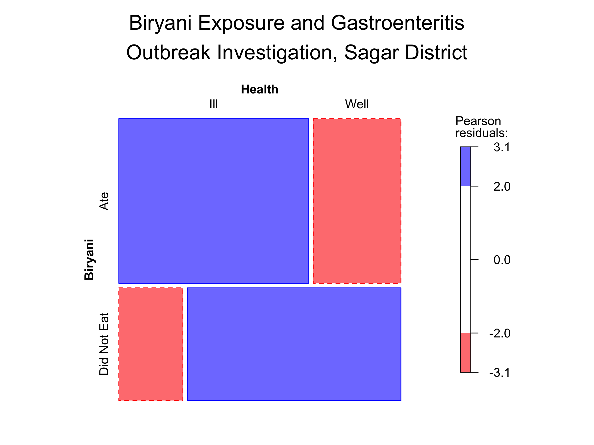
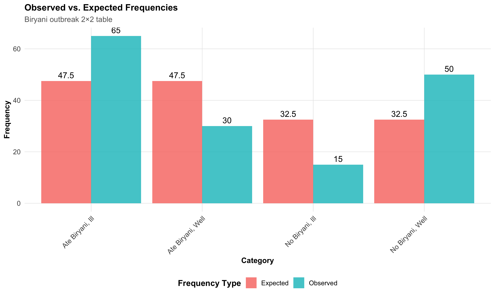
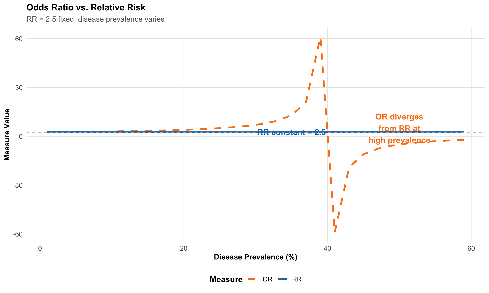
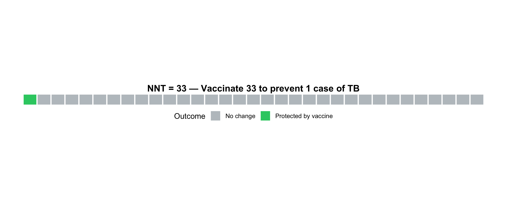

| X. | X..Disease.. | X..No.Disease.. | X..Total.. |
|---|---|---|---|
| **Exposed** | a | b | a+b |
| **Not Exposed** | c | d | c+d |
| **Total** | a+c | b+d | N |
11 Categorical Data — Chi-square, Fisher’s, and Risk Measures
Statistical Analysis of Exposure-Disease Relationships
Biostatistics
Categorical Data
Chi-square
Odds Ratio
Risk Measures
11.1 Learning Objectives
By the end of this module, you will be able to:
- Construct and interpret contingency tables (2×2 and r×c) for categorical data
- Apply chi-square test of independence and understand expected frequencies and degrees of freedom
- Distinguish between Fisher’s exact test and Yates’ correction and when each is appropriate
- Explain McNemar’s test for paired categorical data in before-after studies
- Calculate and interpret measures of association: Relative Risk (RR), Odds Ratio (OR), ARR, RRR, NNT, NNH, AR, and PAR
- Understand when OR ≈ RR and the critical difference between them at high disease prevalence
- Develop a decision tree for choosing the correct test for categorical data analysis
11.2 Clinical Hook
An Outbreak Investigation in Rural Madhya Pradesh
It’s monsoon season in a village near Sagar, Madhya Pradesh. On June 15, 200 residents attend a community feast organised for a wedding. By June 17, local ASHA workers report that 80 villagers have developed acute gastroenteritis (abdominal cramps, diarrhoea, vomiting). The district surveillance officer arrives with her team.
She suspects three main dishes: biryani, paneer tikka, and samosas. She conducts a case-control study (matching 80 affected individuals with 80 unaffected attendees) and constructs 2×2 contingency tables.
For biryani exposure:
| Ate Biryani | Did Not Eat Biryani | Total | |
|---|---|---|---|
| Ill | 65 | 15 | 80 |
| Well | 30 | 50 | 80 |
| Total | 95 | 65 | 160 |
Your Tasks:
- Was the biryani the culprit? (Chi-square test)
- How much more likely are people who ate biryani to get sick? (Odds Ratio)
- If you were the food safety officer, would you shut down the catering business?
By the end of this module, you’ll have the statistical tools to answer these questions with confidence.
11.3 Section 1: Contingency Tables and Chi-square Test
1.1 The 2×2 Contingency Table
A 2×2 contingency table organizes data where two categorical variables, each with two levels, are cross-tabulated:
Where:
- a = exposed with disease
- b = exposed without disease
- c = not exposed with disease
- d = not exposed without disease
- N = total sample size
Outbreak Data (Biryani Exposure)
| X. | X..Ate.Biryani.. | X..Did.Not.Eat.Biryani.. | X..Total.. |
|---|---|---|---|
| **Ill (Gastroenteritis)** | 65 | 15 | 80 |
| **Well** | 30 | 50 | 80 |
| **Total** | 95 | 65 | 160 |
In our outbreak data: a = 65, b = 30, c = 15, d = 50.
1.2 Chi-square Test of Independence
The chi-square test determines whether two categorical variables are independent (unrelated) or associated.
Hypotheses:
- H₀: Exposure and disease are independent (not associated)
- H₁: Exposure and disease are associated (dependent)
Chi-square formula (in words): For each cell, take the difference between what you observed and what you expected under independence, square it, and divide by the expected. Sum across all cells.
\[\chi^2 = \sum \frac{(\text{Observed} - \text{Expected})^2}{\text{Expected}} = \sum \frac{(O_i - E_i)^2}{E_i}\]
Expected frequency for cell (i, j):
\[E_{ij} = \frac{(\text{Row Total}_i) \times (\text{Column Total}_j)}{\text{Grand Total}}\]
For a 2×2 table, the simplified formula is:
\[\chi^2 = \frac{N(ad - bc)^2}{(a+b)(c+d)(a+c)(b+d)}\]
Degrees of freedom: \(df = (r - 1) \times (c - 1)\). For a 2×2 table: df = 1.
1.3 Worked Example: Biryani Outbreak
Step 1: Calculate expected frequencies
Code
# Observed data
a <- 65 # ill, ate biryani
b <- 30 # well, ate biryani
c <- 15 # ill, didn't eat biryani
d <- 50 # well, didn't eat biryani
N <- a + b + c + d
# Expected frequencies
E_ill_biryani <- ((a + c) * (a + b)) / N
E_well_biryani <- ((b + d) * (a + b)) / N
E_ill_no_biryani <- ((a + c) * (c + d)) / N
E_well_no_biryani <- ((b + d) * (c + d)) / N
cat("Expected Frequencies:\n")Expected Frequencies:Ill, Ate Biryani: 47.5 Well, Ate Biryani: 47.5 Ill, No Biryani: 32.5 Well, No Biryani: 32.5 Step 2: Calculate chi-square statistic
Code
Chi-square statistic: 31.7409 Code
cat("Degrees of freedom: 1\n")Degrees of freedom: 1p-value: 1.761736e-08 Code
cat("\nInterpretation: p < 0.05, so we REJECT H₀.\n")
Interpretation: p < 0.05, so we REJECT H₀.Code
cat("The biryani exposure and illness ARE significantly associated.\n")The biryani exposure and illness ARE significantly associated.
Key Insight
A small p-value (< 0.05) indicates that the observed pattern is unlikely under the assumption of independence. This strongly suggests that eating biryani and developing gastroenteritis are not independent — the biryani is likely the culprit.
1.4 Visualising the Outbreak Data
Code
# Create contingency table
outbreak_table <- matrix(c(65, 30, 15, 50), nrow = 2, byrow = TRUE)
dimnames(outbreak_table) <- list(
Biryani = c("Ate", "Did Not Eat"),
Health = c("Ill", "Well")
)
# Mosaic plot
mosaic(outbreak_table,
shade = TRUE,
legend = TRUE,
main = "Biryani Exposure and Gastroenteritis\nOutbreak Investigation, Sagar District",
xlab = "Biryani Exposure",
ylab = "Health Outcome",
gp = shading_Friendly)
The size of each rectangle represents the proportion of people in that category. The shading indicates whether the observed count is more (blue) or less (red) than expected under independence.
1.5 Observed vs. Expected Frequencies
Code
freq_data <- data.frame(
Category = c("Ate Biryani, Ill", "Ate Biryani, Well",
"No Biryani, Ill", "No Biryani, Well"),
Observed = c(65, 30, 15, 50),
Expected = c(round(E_ill_biryani, 1), round(E_well_biryani, 1),
round(E_ill_no_biryani, 1), round(E_well_no_biryani, 1))
)
freq_long <- freq_data %>%
pivot_longer(cols = c("Observed", "Expected"),
names_to = "Type", values_to = "Frequency")
ggplot(freq_long, aes(x = Category, y = Frequency, fill = Type)) +
geom_col(position = "dodge", alpha = 0.8) +
geom_text(aes(label = round(Frequency, 1)),
position = position_dodge(width = 0.9), vjust = -0.5) +
labs(title = "Observed vs. Expected Frequencies",
subtitle = "Biryani outbreak 2×2 table",
x = "Category", y = "Frequency",
fill = "Frequency Type") +
theme_clean() +
theme(axis.text.x = element_text(angle = 45, hjust = 1, size = 10))
The Chi-square Formula at a Glance
For a 2×2 table:
\[\chi^2 = \frac{N(ad - bc)^2}{(a+b)(c+d)(a+c)(b+d)}\]
The numerator is the cross-product difference. The larger the discrepancy between \(ad\) and \(bc\), the larger chi-square, and the stronger the evidence against independence.
11.4 Section 2: Assumptions and Alternatives
2.1 Assumptions of the Chi-square Test
The chi-square test requires:
- Random sample from the population
- Independence of observations (each person counted only once)
- Adequate sample size — all expected frequencies ≥ 5 (for a 2×2 table)
When these assumptions are violated, we turn to alternatives.
2.2 Fisher’s Exact Test
When expected cell frequency < 5 in any cell of a 2×2 table, use Fisher’s exact test. It computes exact probabilities rather than relying on the chi-square approximation.
When to use Fisher’s:
- Any expected frequency < 5 in a 2×2 table
- Small sample sizes (N < 20–30)
- Rare diseases or rare exposures
Worked example: A small cluster of leptospirosis cases after flooding in Alappuzha, Kerala. Only 25 individuals are studied:
Code
Small Outbreak 2×2 Table:Code
print(small_outbreak) Disease
Exposure Leptospirosis Healthy
Waded in floodwater 8 2
Did not wade 3 12Code
cat("\n")Code
fisher_result <- fisher.test(small_outbreak)
cat("Fisher's Exact Test Results:\n")Fisher's Exact Test Results:p-value: 0.0051 Odds Ratio: 13.77
Common Mistake
Using chi-square when expected frequencies are < 5. The p-value becomes unreliable. Always check expected frequencies first.
Rule of thumb: For a 2×2 table with N < 30 or any expected frequency < 5, default to Fisher’s exact test.
2.3 Yates’ Continuity Correction
For moderate sample sizes (20 < N < 50), some texts recommend Yates’ correction:
\[\chi^2_{\text{Yates}} = \frac{N(|ad - bc| - N/2)^2}{(a+b)(c+d)(a+c)(b+d)}\]
Modern perspective: Yates’ correction is often considered overly conservative and not routinely recommended. Fisher’s exact test is preferred for small samples, and the standard chi-square is fine for large samples.
2.4 McNemar’s Test for Paired Categorical Data
When the same subjects are measured twice (before–after or paired design), use McNemar’s test.
Scenario: A TB control programme in Patna, Bihar, tests 100 contacts of TB patients for knowledge about transmission — before and after a health education session.
The McNemar table records who changed their answer:
| After: Correct | After: Incorrect | |
|---|---|---|
| Before: Correct | 55 (concordant) | 5 (lost knowledge) |
| Before: Incorrect | 25 (gained knowledge) | 15 (concordant) |
Only the discordant pairs (b = 5, c = 25) contribute to the test:
\[\chi^2_{\text{McNemar}} = \frac{(b - c)^2}{b + c}\]
Code
McNemar's Test for TB Health Education ProgrammeCode
cat("Discordant pairs: b =", b, ", c =", c, "\n")Discordant pairs: b = 5 , c = 25 Chi-square statistic: 13.3333 p-value: 3e-04 Code
cat("\nThe proportion with correct knowledge significantly\n")
The proportion with correct knowledge significantlyCode
cat("increased after health education (p < 0.05).\n")increased after health education (p < 0.05).
McNemar’s Test
Use when comparing paired categorical outcomes (same subject, before–after). It is the categorical equivalent of the paired t-test. Concordant pairs are ignored — only those who changed contribute to the test statistic.
11.5 Section 3: Measures of Association
We move beyond “is there an association?” to “how strong is the association?” and “what is the clinical impact?”
3.1 Risk and Probability
From a 2×2 table:
- Risk in Exposed: \(P(\text{Disease | Exposed}) = \frac{a}{a+b}\)
- Risk in Unexposed: \(P(\text{Disease | Unexposed}) = \frac{c}{c+d}\)
Code
Risk in Exposed (ate biryani): 0.684 (68.4%) Code
Risk in Unexposed (no biryani): 0.231 (23.1%) 3.2 Relative Risk (RR)
Relative Risk compares disease incidence between exposed and unexposed groups.
In words:
\[RR = \frac{\text{Risk of disease in Exposed}}{\text{Risk of disease in Unexposed}}\]
In cell notation:
\[RR = \frac{a/(a+b)}{c/(c+d)}\]
Interpretation: RR = 1 means no association; RR > 1 means increased risk; RR < 1 means protective.
Relative Risk (RR): 2.965
People who ate biryani were 3 times more likelyCode
cat("to develop gastroenteritis compared to those who didn't.\n")to develop gastroenteritis compared to those who didn't.
Relative Risk (RR)
\[RR = \frac{\text{Incidence in Exposed}}{\text{Incidence in Unexposed}} = \frac{a/(a+b)}{c/(c+d)}\]
Used in: Cohort studies (follow exposed and unexposed groups forward in time).
Advantage: Directly estimates the factor by which risk changes with exposure.
Limitation: Can only be calculated from cohort studies where you can compute incidence; case-control studies must use the Odds Ratio.
3.3 Odds Ratio (OR)
The odds of disease given exposure = number with disease divided by number without disease in the exposed group = \(a/b\).
In words:
\[OR = \frac{\text{Odds of disease in Exposed}}{\text{Odds of disease in Unexposed}}\]
In cell notation (two equivalent forms):
\[OR = \frac{a/b}{c/d} = \frac{ad}{bc} \quad \text{(cross-product ratio)}\]
The cross-product form (\(ad/bc\)) is the quickest way to compute OR from a 2×2 table — multiply the diagonal cells and take the ratio.
Code
Odds of illness in exposed: 2.167 Odds of illness in unexposed: 0.3
Odds Ratio (OR): 7.222 Code
The odds of gastroenteritis are 7.22 times higher
in those who ate biryani.3.4 When Does OR ≈ RR? The Critical Relationship
NEET PG High-Yield
\[OR \approx RR \text{ when disease is RARE (incidence < 5–10%)}\]
When disease is common (incidence > 20%), OR greatly overestimates RR.
Code
scenarios <- expand_grid(
Prevalence = c(0.01, 0.05, 0.10, 0.20, 0.40),
RR = c(1.5, 2.0, 3.0)
)
scenarios <- scenarios %>%
mutate(
baseline_risk = Prevalence,
risk_exposed = baseline_risk * RR,
OR_est = RR * ((1 - baseline_risk) / (1 - risk_exposed))
) %>%
select(Prevalence, RR, OR_est) %>%
mutate(
across(c(Prevalence, OR_est), ~ round(., 3)),
Prevalence = paste0(Prevalence * 100, "%")
) %>%
arrange(desc(Prevalence))
kable(scenarios, col.names = c("Disease Prevalence", "Relative Risk", "Odds Ratio (Est.)"),
format = "html") %>%
kable_styling(full_width = FALSE, bootstrap_options = c("bordered", "hover")) %>%
row_spec(0, bold = TRUE, background = "#D3D3D3")| Disease Prevalence | Relative Risk | Odds Ratio (Est.) |
|---|---|---|
| 5% | 1.5 | 1.541 |
| 5% | 2.0 | 2.111 |
| 5% | 3.0 | 3.353 |
| 40% | 1.5 | 2.250 |
| 40% | 2.0 | 6.000 |
| 40% | 3.0 | -9.000 |
| 20% | 1.5 | 1.714 |
| 20% | 2.0 | 2.667 |
| 20% | 3.0 | 6.000 |
| 10% | 1.5 | 1.588 |
| 10% | 2.0 | 2.250 |
| 10% | 3.0 | 3.857 |
| 1% | 1.5 | 1.508 |
| 1% | 2.0 | 2.020 |
| 1% | 3.0 | 3.062 |
At 1% prevalence the OR closely matches the RR. At 40% prevalence the OR overshoots by 50% or more.
Code
prev_range <- seq(0.01, 0.60, by = 0.02)
rr_val <- 2.5
or_vals <- rr_val * ((1 - prev_range) / (1 - prev_range * rr_val))
df_or_rr <- data.frame(
Prevalence = prev_range * 100,
RR = rr_val,
OR = or_vals
) %>%
pivot_longer(cols = c("RR", "OR"), names_to = "Measure", values_to = "Value")
ggplot(df_or_rr, aes(x = Prevalence, y = Value, color = Measure,
linetype = Measure)) +
geom_line(linewidth = 1.2) +
geom_hline(yintercept = rr_val, linetype = "dashed", color = "gray",
linewidth = 0.5) +
scale_color_manual(values = c("RR" = "#1f77b4", "OR" = "#ff7f0e")) +
scale_linetype_manual(values = c("RR" = "solid", "OR" = "dashed")) +
annotate("text", x = 35, y = rr_val + 0.2, label = "RR constant = 2.5",
color = "#1f77b4", fontface = "bold") +
annotate("text", x = 50, y = 5, label = "OR diverges\nfrom RR at\nhigh prevalence",
color = "#ff7f0e", fontface = "bold") +
labs(title = "Odds Ratio vs. Relative Risk",
subtitle = "RR = 2.5 fixed; disease prevalence varies",
x = "Disease Prevalence (%)",
y = "Measure Value") +
theme_clean()
NEET PG Trap
A case-control study of melanoma reports OR = 3.2 for sun exposure. A student incorrectly states: “Sun exposure increases melanoma risk by 3.2 times.”
The error: Case-control studies cannot directly estimate RR. The OR = 3.2 approximates RR only if melanoma is rare. If prevalence is high, OR overestimates the true RR.
Correct statement: “The odds of past sun exposure are 3.2 times higher in cases than controls. Under the rare disease assumption, RR ≈ 3.2.”
3.5 Confidence Intervals for OR
\[OR_{95\%CI} = OR \times e^{\pm 1.96 \times SE(\ln OR)}\]
where \(SE(\ln OR) = \sqrt{\frac{1}{a} + \frac{1}{b} + \frac{1}{c} + \frac{1}{d}}\)
Code
Odds Ratio and 95% Confidence Interval:OR = 7.222 95% CI: 3.511 – 14.855 Code
cat("\nSince the CI does NOT include 1.0, the association\n")
Since the CI does NOT include 1.0, the associationCode
cat("is statistically significant at the 0.05 level.\n")is statistically significant at the 0.05 level.
Confidence Interval Rule
- CI includes 1.0: Not statistically significant (p > 0.05)
- CI excludes 1.0: Statistically significant (p < 0.05)
11.6 Section 4: Measures of Impact and Clinical Significance
We shift from association (RR, OR) to impact measures that directly inform clinical decisions.
4.1 Absolute Risk Reduction (ARR) and Relative Risk Reduction (RRR)
These measures translate association into clinical impact.
In words:
- ARR = How much does treatment lower the absolute risk? = Risk in Control group − Risk in Treatment group
- RRR = What fraction of the baseline risk is removed by treatment? = ARR ÷ Risk in Control group
Scenario: A TB vaccine trial conducted across PHCs in Varanasi, Uttar Pradesh — 500 vaccinated vs. 500 unvaccinated individuals:
- Unvaccinated: 20/500 developed TB (4.0%)
- Vaccinated: 5/500 developed TB (1.0%)
Code
Risk in Unvaccinated: 4 %Risk in Vaccinated: 1 %
Absolute Risk Reduction (ARR): 3 %Code
cat("Vaccinating prevents illness in 3 per 100 people.\n")Vaccinating prevents illness in 3 per 100 people.
Relative Risk Reduction (RRR): 75 %Code
cat("Vaccination reduces TB risk by 75% relative to baseline.\n")Vaccination reduces TB risk by 75% relative to baseline.
ARR vs. RRR
\[ARR = \text{Risk}_{\text{Control}} - \text{Risk}_{\text{Intervention}}\]
\[RRR = \frac{ARR}{\text{Risk}_{\text{Control}}}\]
Critical difference: ARR is what matters clinically; RRR can sound impressive but overstate impact when baseline risk is low.
Example: If baseline risk is 1%, an intervention that halves it gives RRR = 50% (sounds great) but ARR = 0.5% (modest impact).
4.2 Number Needed to Treat (NNT)
NNT = how many patients you must treat to prevent one adverse outcome.
In words: If the ARR is 3% (i.e., treatment prevents disease in 3 out of every 100), then you need to treat 100/3 ≈ 33 people to prevent one case.
\[NNT = \frac{1}{ARR}\]
Number Needed to Treat (NNT): 33.3
You must vaccinate 33.3 people to prevent one case of TB.Code
nnt_value <- round(NNT, 0)
icon_data <- data.frame(
x = rep(1:nnt_value, length.out = nnt_value),
y = rep(1, nnt_value),
Status = c("Protected by vaccine", rep("No change", nnt_value - 1))
)
ggplot(icon_data, aes(x = x, y = y, fill = Status)) +
geom_tile(color = "white", linewidth = 0.8, height = 0.8) +
scale_fill_manual(values = c("Protected by vaccine" = "#2ecc71",
"No change" = "#bdc3c7")) +
coord_equal() +
labs(title = paste0("NNT = ", nnt_value,
" — Vaccinate ", nnt_value,
" to prevent 1 case of TB"),
x = "", y = "", fill = "Outcome") +
theme_void() +
theme(plot.title = element_text(hjust = 0.5, face = "bold", size = 13),
legend.position = "bottom")
Interpreting NNT
- NNT ≈ 10: Excellent (treat 10 to save one)
- NNT ≈ 50: Moderate benefit
- NNT > 200: Modest benefit
Compare across interventions: an NNT of 15 is superior to an NNT of 40.
4.3 Number Needed to Harm (NNH)
\[NNH = \frac{1}{\text{Risk}_{\text{Treatment}}^{\text{harm}} - \text{Risk}_{\text{Control}}^{\text{harm}}}\]
Suppose in the same vaccine trial, severe local reactions occur in 8/500 vaccinated vs. 2/500 unvaccinated:
Code
Risk of severe reaction in Vaccinated: 1.6 %Risk of severe reaction in Unvaccinated: 0.4 %Absolute Risk of Harm: 1.2 %
NNH: 83.3 For every 83 vaccinated, 1 has a severe reaction.Therapeutic index: NNH / NNT tells you how the benefit compares to harm:
Therapeutic Index (NNH/NNT): 2.5 Code
Benefit clearly outweighs harm — VACCINATION RECOMMENDED.4.4 Attributable Risk (AR) and Population Attributable Risk (PAR)
Attributable Risk (AR) answers: “How much extra disease does the exposure cause in exposed individuals?”
In words:
- AR = Risk in Exposed − Risk in Unexposed (the excess risk attributable to the exposure)
- AR% = What percentage of disease among the exposed is caused by the exposure? = (AR ÷ Risk in Exposed) × 100
Population Attributable Risk (PAR) answers: “If we could eliminate the exposure entirely, what fraction of disease in the whole population would disappear?”
- PAR depends on both the strength of association (RR) and how common the exposure is in the population (\(P_e\))
Scenario: A cohort study of smoking and lung cancer:
- Risk in smokers: 8%
- Risk in non-smokers: 1%
Code
Attributable Risk (AR): 7 %AR%: 87.5 %
87.5 % of lung cancer in smokersCode
cat("is attributable to (caused by) smoking.\n")is attributable to (caused by) smoking.Population Attributable Risk (PAR) answers: “What proportion of disease in the entire population is due to this exposure?”
\[PAR\% = \frac{P_e(RR - 1)}{P_e(RR - 1) + 1} \times 100\]
where \(P_e\) = prevalence of exposure.
Code
P_e <- 0.40 # 40% of population smokes
RR_smoking <- risk_smokers / risk_nonsmokers
PAR_percent <- (P_e * (RR_smoking - 1)) / (P_e * (RR_smoking - 1) + 1) * 100
cat("Smoking prevalence:", P_e * 100, "%\n")Smoking prevalence: 40 %RR: 8
PAR%: 73.7 %73.7 % of ALL lung cancer in the populationCode
cat("could be prevented if smoking were eliminated.\n")could be prevented if smoking were eliminated.
AR vs. PAR — Clinical vs. Public Health
\[AR = \text{Risk}_{\text{Exposed}} - \text{Risk}_{\text{Unexposed}}\]
\[PAR\% = \frac{P_e(RR - 1)}{P_e(RR - 1) + 1} \times 100\]
- AR: Relevant for individual patient counselling (“your personal risk from this exposure”)
- PAR%: Relevant for public health policy (“population-level benefit of removing exposure”)
11.7 Section 5: Decision Guide for Test Selection
| Scenario | Test / Measure | Key Note |
|---|---|---|
| Two independent groups, all expected freq ≥ 5 | Chi-square test | Most common; requires adequate sample size |
| Two independent groups, any expected freq | Fisher's exact test | Exact probability; no sample size restriction |
| Paired / before–after categorical data | McNemar's test | Uses only discordant pairs |
| Ordered categories, testing for trend | Chi-square test for trend | Extension for ordinal categories |
| Cohort study, 2×2 table | Relative Risk (RR) | Direct risk measure; OR ≈ RR when disease is rare |
| Case-control study, 2×2 table | Odds Ratio (OR) | Only valid measure from case-control design |
| Measuring clinical impact of treatment | ARR, RRR, NNT, NNH | Translate statistical results into clinical decisions |
Quick Reference Table
| Study Design / Question | Test / Measure | Null Hypothesis / Assumption |
|---|---|---|
| Are two categorical variables associated? | Chi-square test | Variables are independent |
| Small sample / expected freq | Fisher's exact test | Variables are independent (exact) |
| Same subjects, before–after? | McNemar's test | No change in paired proportions |
| Cohort study (can calculate incidence)? | Relative Risk (RR) | RR = 1 |
| Case-control study? | Odds Ratio (OR) | OR = 1 |
| How many to treat to prevent one outcome? | NNT = 1/ARR | ARR = 0 (no benefit) |
| Proportion of disease due to exposure? | Attributable Risk (AR) | Risk same in exposed/unexposed |
| Population benefit of removing exposure? | Population Attributable Risk (PAR) | Population at baseline unexposed risk |
Core Formulae — In Words and Notation
| Measure | In Words | Cell Notation |
|---|---|---|
| Chi-square | Sum of (Observed − Expected)² ÷ Expected | \(\sum (O - E)^2 / E\) |
| RR | Risk in Exposed ÷ Risk in Unexposed | \(\frac{a/(a+b)}{c/(c+d)}\) |
| OR | Odds in Exposed ÷ Odds in Unexposed = Cross-product ratio | \(\frac{ad}{bc}\) |
| ARR | Risk in Control − Risk in Treatment | \(R_c - R_t\) |
| RRR | ARR ÷ Risk in Control | \(ARR / R_c\) |
| NNT | 1 ÷ ARR (how many to treat to save one) | \(1 / ARR\) |
| NNH | 1 ÷ Absolute Risk of Harm | \(1 / ARH\) |
| AR | Risk in Exposed − Risk in Unexposed (excess risk from exposure) | \(R_e - R_u\) |
| AR% | (AR ÷ Risk in Exposed) × 100 | \((AR / R_e) \times 100\) |
| PAR% | Fraction of disease in population attributable to exposure | \(\frac{P_e(RR-1)}{P_e(RR-1)+1} \times 100\) |
11.8 Section 6: Complete R Workflow
Code
# ==========================================
# COMPLETE OUTBREAK ANALYSIS WORKFLOW
# ==========================================
# Step 1: Input data
a <- 65; b <- 30; c <- 15; d <- 50
N <- a + b + c + d
outbreak <- data.frame(
Exposure = c("Ate Biryani", "Ate Biryani", "No Biryani", "No Biryani"),
Health = c("Ill", "Well", "Ill", "Well"),
Count = c(a, b, c, d)
)
cont_table <- xtabs(Count ~ Exposure + Health, data = outbreak)
print(cont_table) Health
Exposure Ill Well
Ate Biryani 65 30
No Biryani 15 50Code
# Step 2: Chi-square test
chi_test <- chisq.test(cont_table)
cat("\n--- CHI-SQUARE TEST ---\n")
--- CHI-SQUARE TEST ---Code
print(chi_test)
Pearson's Chi-squared test with Yates' continuity correction
data: cont_table
X-squared = 29.953, df = 1, p-value = 4.426e-08Code
# Step 3: Measures of association
risk_exp <- a / (a + b)
risk_unexp <- c / (c + d)
RR <- risk_exp / risk_unexp
OR <- (a * d) / (b * c)
ln_OR <- log(OR)
se_ln_OR <- sqrt(1/a + 1/b + 1/c + 1/d)
or_ci <- exp(ln_OR + c(-1, 1) * 1.96 * se_ln_OR)
ARR <- risk_exp - risk_unexp
cat("\n--- MEASURES OF ASSOCIATION ---\n")
--- MEASURES OF ASSOCIATION ---Risk in Exposed: 0.684 Risk in Unexposed: 0.231 Relative Risk (RR): 2.965 Odds Ratio (OR): 7.222 95% CI for OR: 3.511 – 14.855 ARR: 45.34 %Code
cat("\n--- INTERPRETATION ---\n")
--- INTERPRETATION ---Code
cat("Biryani exposure is significantly associated with\n")Biryani exposure is significantly associated withCode
gastroenteritis (χ² = 29.953 , p = 0 ).People eating biryani were 3 times more likely to get ill.The odds of illness were 7.2 times higher in those who ate biryani.11.9 Summary
Key Takeaways
Chi-square test determines whether two categorical variables are associated. Check expected frequencies ≥ 5; use Fisher’s exact test for small samples.
McNemar’s test handles paired categorical data (before–after). It only uses discordant pairs.
Relative Risk (RR) compares incidence in exposed vs. unexposed — used in cohort studies.
Odds Ratio (OR) compares odds — used in case-control studies. When disease is rare (< 5–10%), OR ≈ RR. At high prevalence, OR overestimates RR.
NNT = 1/ARR answers “How many must I treat to prevent one outcome?” Lower NNT = greater benefit.
AR and PAR quantify individual and population-level impact, guiding public health policy.
Always report 95% CI for OR and RR. If the CI excludes 1.0, the result is statistically significant.
11.10 Practice Questions
Q1: Number Needed to Treat
A vaccine trial enrolls 500 vaccinated and 500 unvaccinated individuals. Over 2 years, 10 vaccinated and 40 unvaccinated develop typhoid. What is the NNT?
Q2: OR Approximates RR
In a case-control study, OR for processed meat and colorectal cancer is 2.5. Population prevalence of colorectal cancer is 3%. Which statement is MOST accurate?
Q3: Chi-Square Interpretation
A foodborne outbreak table shows: Exposed+Ill = 45, Exposed+Well = 20, Unexposed+Ill = 10, Unexposed+Well = 75. Chi-square = 34.5, p < 0.001. Which interpretation is CORRECT?
Q4: Relative Risk Calculation
In a cohort study, 120 of 1000 smokers and 10 of 1000 non-smokers develop lung cancer over 10 years. What is the Relative Risk?
Q5: Absolute Risk Reduction
A vaccine trial: 5/500 vaccinated and 20/500 placebo develop disease. What is the ARR and its clinical meaning?
Q6: McNemar’s Test
100 patients are tested before and after a health education session. Results: 55 correct→correct, 5 correct→incorrect, 25 incorrect→correct, 15 incorrect→incorrect. Which test is appropriate and what are the discordant pairs?
11.11 Appendix: R Functions Quick Reference
Code
# ======================================
# QUICK R REFERENCE — CATEGORICAL ANALYSIS
# ======================================
# Create 2×2 contingency table
cont_table <- matrix(c(a, b, c, d), nrow = 2, byrow = TRUE)
# Chi-square test
chisq.test(cont_table)
# Fisher's exact test (small samples)
fisher.test(cont_table)
# McNemar's test (paired data)
mcnemar.test(cont_table)
# Relative Risk
RR <- (a/(a+b)) / (c/(c+d))
# Odds Ratio
OR <- (a*d) / (b*c)
# 95% CI for OR
ln_OR <- log(OR)
se_ln_OR <- sqrt(1/a + 1/b + 1/c + 1/d)
ci_or <- exp(ln_OR + c(-1.96, 1.96) * se_ln_OR)
# ARR and NNT
ARR <- risk_control - risk_treatment
NNT <- 1 / ARR
# Attributable Risk Percent
AR_percent <- ((risk_exposed - risk_unexposed) / risk_exposed) * 100
# Population Attributable Risk
PAR_pct <- (Pe * (RR - 1)) / (Pe * (RR - 1) + 1) * 100End of Module 10
AIIMS Bhopal Biostatistics Course | Updated: 2026-02-25